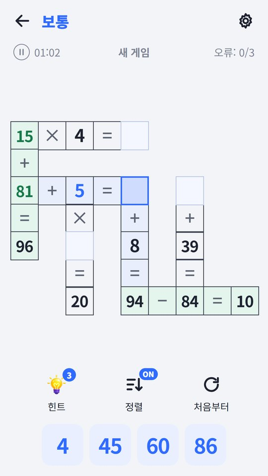
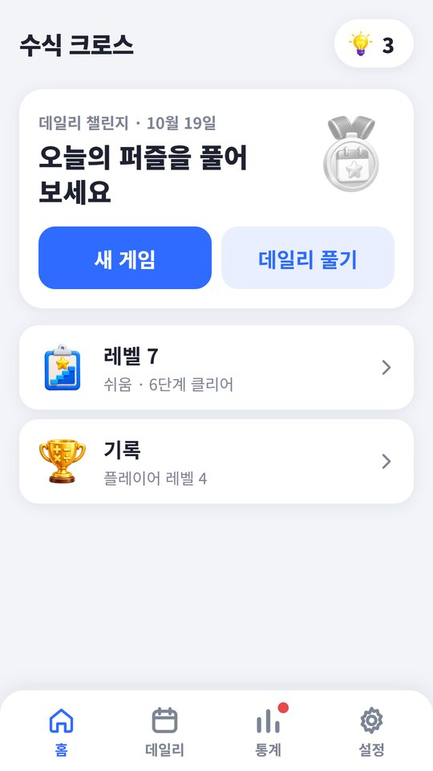
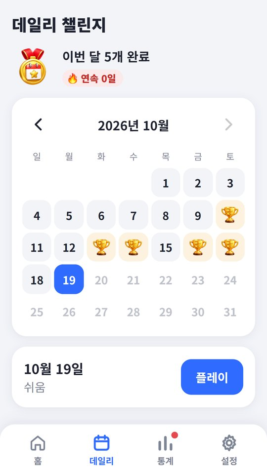
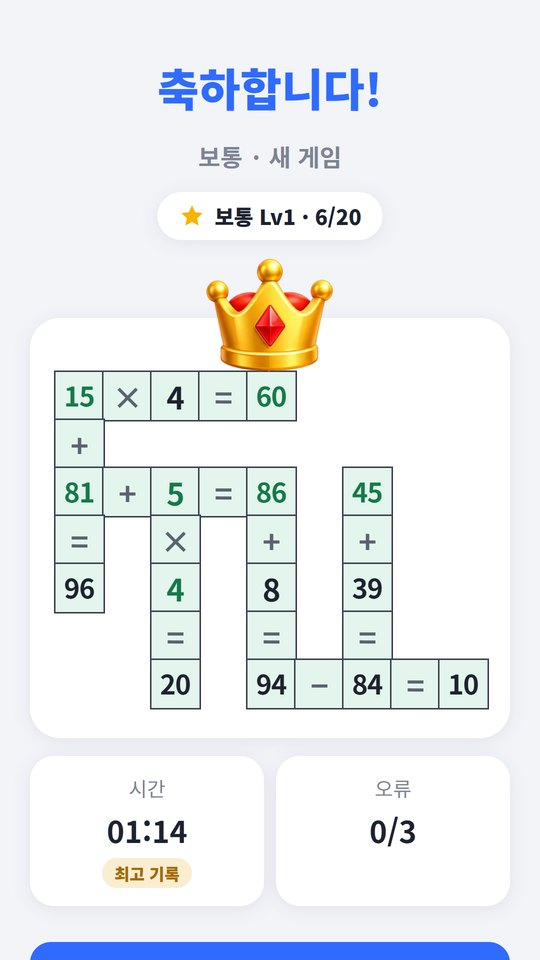
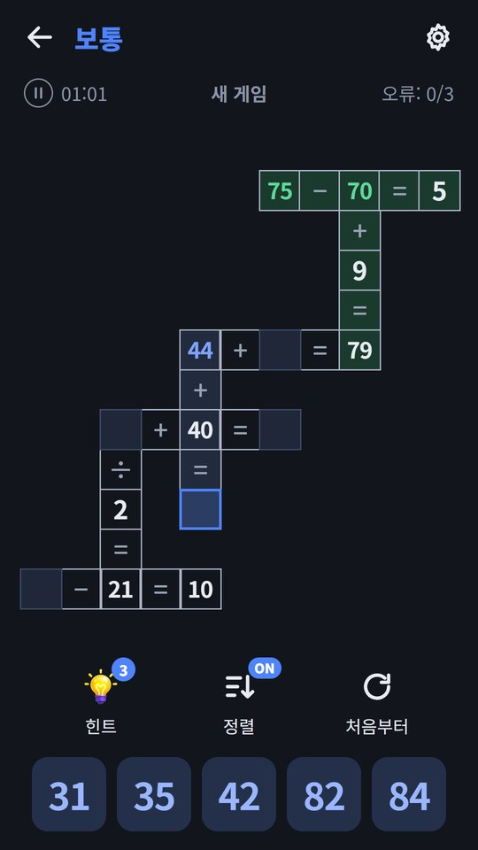

누르거나 끌거나
칸을 고르고 타일을 누르면 쏙 들어갑니다. 타일을 끌어다 빈칸에 바로 놓아도 됩니다.
판 위에 가로·세로 수식이 엇갈려 놓여 있습니다. 아래 숫자 타일을 빈칸에 채워 모든 수식을 맞추면 끝. 덧셈·뺄셈·곱셈·나눗셈만 알면 바로 시작할 수 있습니다.
모든 판은 답이 하나뿐이고, 찍지 않고 추리만으로 끝까지 풀립니다.
난이도가 올라갈수록 판이 커지고, 수가 커지고, 빈칸이 많아집니다. 쉬움은 몇 분이면 끝나고, 전문가는 수식 여러 줄을 오가며 오래 들여다보게 됩니다.
밝게와 어둡게를 모두 지원하고, 기기 설정을 따라갑니다.





칸을 고르고 타일을 누르면 쏙 들어갑니다. 타일을 끌어다 빈칸에 바로 놓아도 됩니다.
맞은 수는 초록으로 박히고, 다 맞춘 수식은 색이 바뀝니다. 고른 칸이 지나는 수식은 옅게 칠해집니다.
요일마다 난이도가 달라지고, 달력에서 지난 날짜도 골라 풀 수 있습니다.
1단계부터 한 판씩, 깰 때마다 조금씩 어려워집니다. 쉬움에서 시작해 전문가까지 올라가 보세요.
놓은 타일은 눌러서 언제든 뺄 수 있습니다. 수식 한 줄을 다 채우면 그때 맞는지 알려 줍니다.
난이도별 승률·최고 기록·평균 시간을 모으고, 첫 승리·완벽한 판·데일리 연속 같은 수상으로 진열장을 채웁니다.
브라우저에서는 설치도 로그인도 없이 바로 시작합니다. 하다 만 판은 저절로 저장되어 다음에 열면 이어서 풀 수 있습니다. 폰에 두고 쓰고 싶으면 Google Play에서 받으세요.